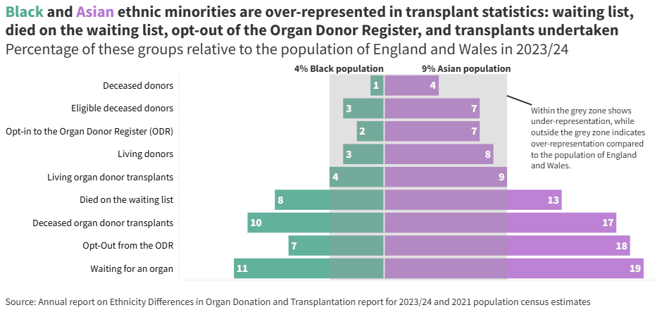

This is just a quick post, as a follow on to my previous highcharter posts (one and two).
I wanted a bar chart that looks like Figure 1, which was made using Flourish.

Figure 1: A bidirectional bar chart created using Flourish
Code
library(data.table)library(highcharter)
Registered S3 method overwritten by 'quantmod':
method from
as.zoo.data.frame zoo
Highcharts (www.highcharts.com) is a Highsoft software product which is
not free for commercial and Governmental use
On a separate note, I’ve started preferring data.table over the tidyverse. It is super fast, and feels like the syntax is very well thought out. It also allows me to start experimenting with {mlr3}.
The data
The data looks like this.
Code
bar_data <-data.table(donation_and_transplantation_summary =c("Waiting for an organ","Opt-Out from the ODR","Deceased organ donor transplants","Died on the waiting list","Living organ donor transplants","Living donors","Opt-in to the Organ Donor Register (ODR)","Eligible deceased donors","Deceased donors" ),black_percent =c(-11, -7, -10, -8, -4, -3, -2, -3, -1),asian_percent =c(19, 18, 17, 13, 9, 8, 7, 7, 4))bar_data
donation_and_transplantation_summary black_percent asian_percent
<char> <num> <num>
1: Waiting for an organ -11 19
2: Opt-Out from the ODR -7 18
3: Deceased organ donor transplants -10 17
4: Died on the waiting list -8 13
5: Living organ donor transplants -4 9
6: Living donors -3 8
7: Opt-in to the Organ Donor Register (ODR) -2 7
8: Eligible deceased donors -3 7
9: Deceased donors -1 4
The chart
Code
highchart() |># Set the chart typehc_chart(type ="bar") |># Provide x-axis categories (the labels for each bar)hc_xAxis(list(categories = bar_data$donation_and_transplantation_summary,reversed =FALSE )#list( # mirror axis on right side# opposite = TRUE,# categories = bar_data$donation_and_transplantation_summary,# reversed = FALSE,# linkedTo = 0# ) ) |>hc_yAxis(gridLineColor ="#f2f5f3",labels =list(# positive values on both sides, appended with '%'formatter =JS("function() { return Math.abs(this.value) + '%'; }") ),plotBands =list( list(color ='#e2e1e1', from =0, to =9,label =list(text ="9% Asian population",align ='left',y =-1,x =10 ) ),list(color ='#e2e1e1', from =-4, to =0,label =list(text ="4% Black population",align ='right',y =-1 ) ) ) ) |>hc_plotOptions(series =list(# put bars for the same category on the same linestacking ="normal",pointPadding =0.01, # Padding between each column or bar, in x axis units... Defaults to 0.1.groupPadding =0.05# Padding between each value groups, in x axis units... Defaults to 0.2. ) ) |>hc_title(text ="<span style='color:#62b19c;'>Black</span> and <span style='color:#bd82d5;'>Asian</span> ethnic minorities are over-represented in transplant statistics",useHTML =TRUE,style =list(fontWeight ='bold' ),align ="left" ) |>hc_subtitle(text ="Percentage of these groups relative to the population of England and Wales in 2023/24",align ='left' ) |>hc_credits(enabled =TRUE,text ="Ethnicity Differences in Organ Donation and Transplantion report for 2023/24 and 2021 population census estimates.",href ="https://www.odt.nhs.uk/statistics-and-reports/annual-report-on-ethnicity-differences/" ) |>hc_annotations(list(draggable ='',labelOptions =list(shape ='connector',justify =FALSE,crop =TRUE,style =list(fontSize ="10px",textOutline ="1px white",fontWeight ="normal",color ="#4a4a4a" ) ),labels =list(point =list(xAxis =0, yAxis =0, y =9, x =6.5),text ="Within the grey zone shows<br>under-representation, while<br>outside the grey zone indicates<br>over-representation compared<br>to the population of England<br>and Wales.",x =100, # offset in pixelsy =50 ) ) ) |>hc_legend(align ="right",verticalAlign ="bottom",layout ="horizontal" ) |>hc_tooltip(formatter =JS("function() { return '<b>' + this.series.name + '</b><br/>' + this.point.category + ': ' + Highcharts.numberFormat(Math.abs(this.point.y), 0) + '%'; }" ) ) |>hc_exporting(accessibility =list(enabled =TRUE# default value is TRUE ),enabled =TRUE,filename ="ethnic_minority_bar" ) |>hc_plotOptions(accessibility =list(enabled =TRUE,keyboardNavigation =list(enabled =TRUE) ) ) |># Add a series of numeric values for the barshc_add_series(name ="Asian population",data = bar_data$asian_percent,color ='#bd82d5' ) |>hc_add_series(name ="Black population",data = bar_data$black_percent,color ='#62b19c' )
Fin
I think the end result is pretty good.
Citation
BibTeX citation:
@online{smith2025,
author = {Smith, Paul},
title = {A {Bidirectional} {Bar} {Chart} Using {Highcharter}},
date = {2025-02-19},
url = {https://pws3141.github.io/blog/posts/04-highcharter_bar/},
langid = {en}
}